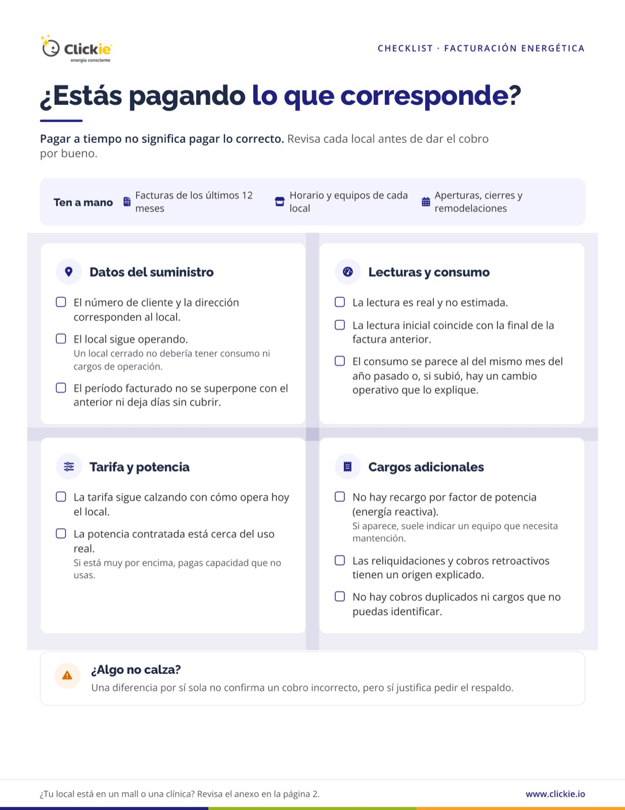
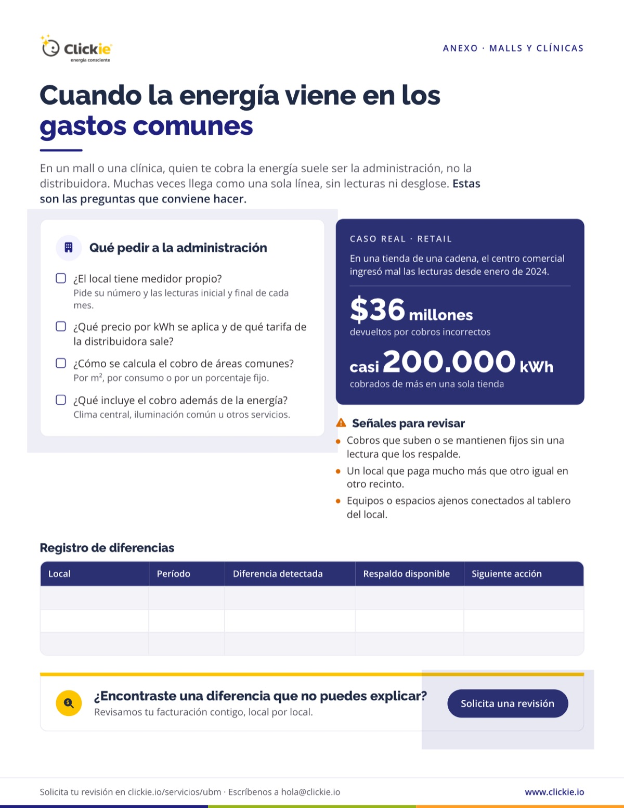

En una cadena con muchos locales, la factura eléctrica suele revisarse por el total: si el monto se parece al del mes anterior, se paga. El problema es que una factura puede ser estable y, aun así, estar mal. Y ese error no se queda en un local: se repite en cada sucursal, todos los meses.
Por eso armamos un checklist de dos páginas para revisar cada factura antes de darla por buena. Sale de lo que vemos al auditar facturas de retail y de las preguntas que más se repiten en nuestras conversaciones con equipos de mantenimiento y finanzas.
Qué revisa el checklist
La primera página ordena la revisión en cuatro partes:
- Datos del suministro. Que la factura corresponda al local, que el local siga operando y que el período esté bien.
- Lecturas y consumo. Que la lectura sea real y no estimada, y que el consumo tenga sentido frente al año anterior.
- Tarifa y potencia. Que la tarifa siga calzando con la operación y que no estés pagando potencia que no usas.
- Cargos adicionales. Recargos por energía reactiva, reliquidaciones sin explicar y cobros duplicados.
Si quieres profundizar en estos errores, los explicamos en Los 4 errores que esconde una factura eléctrica de retail.
Locales en malls y clínicas
Cuando un local está dentro de un centro comercial o una clínica, quien cobra la energía suele ser la administración. El cobro llega muchas veces como una sola línea en los gastos comunes, sin lecturas ni desglose.
La segunda página del checklist reúne las preguntas que conviene hacer a la administración: si el local tiene medidor propio, qué precio por kWh se aplica, cómo se calculan las áreas comunes y qué incluye el cobro. También trae una tabla para registrar las diferencias que encuentres. Más contexto en Prorrateos con baja visibilidad.


Por qué vale la pena revisar
En una tienda de una cadena de retail, el centro comercial ingresó mal las lecturas desde enero de 2024. Se cobraron casi 200.000 kWh de más y, tras la auditoría, el mall devolvió $36 millones.
No todas las diferencias terminan en una devolución. Pero una diferencia que no tiene explicación siempre justifica pedir el respaldo.
¿Encontraste algo que no puedes explicar? Solicita una revisión de tu facturación o escríbenos a hola@clickie.io.